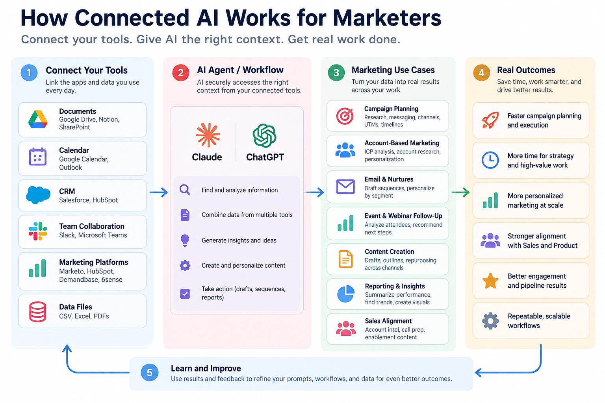

THE BIG PICTURE
Okay, but what can connected AI actually do?
Think of MCP as one way an AI assistant can request information from approved external tools. The benefit isn't the connection itself. It's what you can learn, draft, and decide with trustworthy context.
This page shows a practical path from your marketing systems to useful work. These are examples of possible workflows, not a promise that every app, plan, or connector supports every action.
THE CONNECTED WORKFLOW
See how the pieces fit together.
Start with the tools your team already uses. When supported connections are configured and permitted, an AI assistant can retrieve relevant context, help with marketing work, and produce drafts or recommendations for people to check.

Choose a supported, approved source and check permissions.
Specify the question, date range, records, and boundaries.
Check sources, assumptions, matching, and suggested actions.
Act only after approval; measure results and improve the process.
PRACTICAL POSSIBILITIES
Six ways marketers could put it to work.
Pick one problem you already face. Start with a read-only request, ask AI to show its evidence, and decide what deserves your attention.
MARKETING WORKFLOW
ABM & account intelligence
Decide which accounts deserve a closer look
- Start with
- Approved CRM account records, account engagement, and available intent signals.
- What you get
- An account shortlist with reasons and missing-data flags.
- Human check
- Verify identity matches and intent definitions before assigning outreach.
Compare target-account engagement over the last 30 days, identify three accounts for Sales review, and cite each underlying record and date. Do not update the CRM.
MARKETING WORKFLOW
Campaign planning
Turn scattered context into one workable brief
- Start with
- Current positioning, campaign goals, approved creative, and historical results.
- What you get
- A reviewed brief covering audience, message, channels, CTAs, and measurement.
- Human check
- Confirm claims, budget and owner approval before launch.
Draft a campaign brief for our next webinar using only the approved positioning and past performance files I can access. List any assumptions and link each source.
MARKETING WORKFLOW
Email & nurture
Make follow-up more relevant
- Start with
- Approved messaging, lifecycle stage, and segment-level engagement.
- What you get
- A draft sequence ready for human editing and marketing automation QA.
- Human check
- Review opt-in, tone, personalization fields and compliance.
Using approved product messaging and the webinar follow-up rules, draft three nurture email options for attendees. Do not send them. Explain the audience assumptions.
MARKETING WORKFLOW
Event & webinar follow-up
Find attendees who need attention
- Start with
- Attendance exports and permitted CRM opportunity records.
- What you get
- A segmented follow-up queue with evidence and exceptions.
- Human check
- Check contact matching and routing with Sales before action.
Compare the webinar attendee list with the CRM opportunities file. Identify likely matches with record IDs, note unclear matches, and recommend follow-up categories.
MARKETING WORKFLOW
Reporting & insights
Prepare a more useful weekly review
- Start with
- Campaign metrics, opportunity data, attribution definitions, and reporting dates.
- What you get
- A draft weekly readout: wins, gaps, questions, and next actions.
- Human check
- Reconcile pipeline totals and attribution before sharing with leadership.
Summarize this week’s campaign performance using only connected approved reports. Show source links, date ranges, metric definitions, and anything that cannot be reconciled.
MARKETING WORKFLOW
Sales enablement
Give sellers context—not another giant document
- Start with
- Approved product messaging, account history, meeting notes and open opportunities.
- What you get
- A concise pre-call brief, with relevant talking points and source references.
- Human check
- Have the account owner validate details before customer use.
Create a one-page account brief from approved CRM and messaging sources. Separate verified facts from suggested talking points; include record links.
START SMALL
Your first useful connected-AI test.
A good first experiment
- Pick a question: “Which recent webinar attendees are associated with open opportunities?”
- Choose approved sources: a webinar file and permitted CRM records, if supported.
- Start read-only: ask for a draft table with record IDs, source links, and uncertainty flags.
- Review manually: validate contacts, opportunity stage, date range, and assumptions.
- Only then act: confirm any follow-up, CRM changes, or outreach with the responsible owner.
The sample-data lab teaches analysis and verification. It does not by itself establish an MCP integration.
THE HUMAN PART
Connected doesn't mean unquestioned.
AI can connect the dots. You decide what they mean.
Before using results, check access permissions, source freshness, record-level evidence, privacy obligations, and whether any action requires approval. The best workflow saves time without removing accountability.